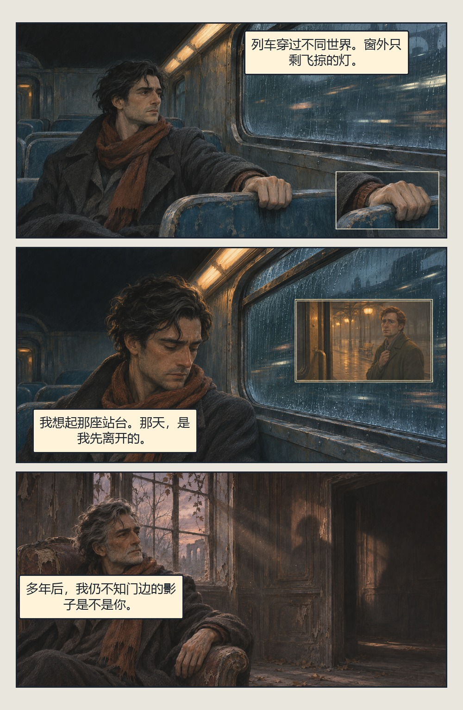

网络短篇改编 · 格内多镜头
最后一次离别
改编自 whenwerewe 的《Story of Your Life, and Another》末段。
阅读漫画
下载整页

三个场合，三种处理
- 列车格保留连续主画面。右下只放大手、袖口和座沿，让读者察觉紧张。
- 站台记忆用小尺寸暖色镜头和双边框，冷色车厢继续承载现实中的旅人。
- 晚年老宅进入新的时间和空间，给它独立外格，让结尾的停顿成立。
网络短篇改编 · 格内多镜头
改编自 whenwerewe 的《Story of Your Life, and Another》末段。
